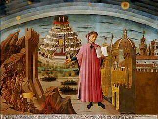

The Divine Comedy (Italian: Divina Commedia Italian pronunciation: [diˈviːna komˈmɛːdja]) is an Italian narrative poem by Dante Alighieri, begun c. 1308 and completed in 1320, a year before his death in 1321. It is widely considered the pre-eminent work in Italian literature[1] and one of the greatest works of world literature.[2] The poem's imaginative vision of the afterlife is representative of the medieval worldview as it existed in the Western Church by the 14th century. It helped establish the Tuscan language, in which it is written, as the standardized Italian language.[3] It is divided into three parts: Inferno, Purgatorio, and Paradiso. The narrative takes as its literal subject the state of the soul after death and presents an image of divine justice meted out as due punishment or reward,[4] and describes Dante's travels through Hell, Purgatory, and Heaven.[5] Allegorically, the poem represents the soul's journey towards God,[6] beginning with the recognition and rejection of sin (Inferno), followed by the penitent Christian life (Purgatorio), which is then followed by the soul's ascent to God (Paradiso). Dante draws on medieval Roman Catholic theology and philosophy,[7] especially Thomistic philosophy derived from the Summa Theologica of Thomas Aquinas.[8] Consequently, the Divine Comedy has been called "the Summa in verse".[9] In the poem, the pilgrim Dante is accompanied by three guides:[10][4] Virgil (who represents human reason, and who guides him for all of Inferno and most of Purgatorio);[11] Beatrice (who represents divine revelation,[11] theology, faith, and grace, guiding him at the end of Purgatorio and for most of Paradiso);[12] and Saint Bernard of Clairvaux (who represents contemplative mysticism and devotion to Mary the Mother, guiding him in the final cantos of Paradiso).[13] Erich Auerbach said Dante was the first writer to depict human beings as the products of a specific time, place and circumstance as opposed to mythic archetypes or a collection of vices and virtues; this along with the fully imagined world of the Divine Comedy, different from our own but fully visualized, suggests that the Divine Comedy could be said to have inaugurated realism and self-portraiture in modern fiction.[14] The work was originally simply titled Comedìa (pronounced [komeˈdiːa], Tuscan for "Comedy") – so also in the first printed edition, published in 1472 – later adjusted to the modern Italian Commedia. The adjective Divina was added by Giovanni Boccaccio,[15] owing to its subject matter and lofty style,[16] and the first edition to name the poem Divina Comedia in the title was that of the Venetian humanist Lodovico Dolce,[17] published in 1555 by Gabriele Giolito de' Ferrari.

Dante's Holding The Divine Comedy